03 · DCN 与多切片：把单片的优化搬到 10+ 片
这章解决什么：单片（一个 ICI slice）调顺以后，要把同一份训练铺到 10+ 片上。片与片之间只能走数据中心网络（DCN），它每次发起都有毫秒级固定开销、默认在 host CPU 上做加法，单片上藏得好好的通信，到了多片会重新露出来。这章讲把这截差距收回来的十来个 feature、它们的先后依赖，以及三个绕不开的问题：怎么量 DCN、双峰慢步怎么定位、弱扩展该拿什么口径比。
步时指数：全书统一，大号模型以单片 BF16 最初基线 = 100，越小越快；只在单个 A/B 里出现的数只给百分比。
依赖顺序：
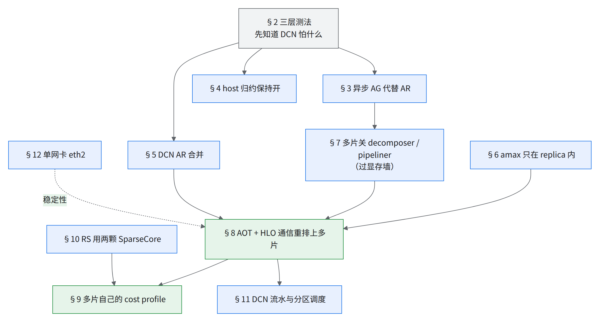
读图：§3–§6 是单个 flag / pass，各自独立可试；§8 是这章最大的一跳，前提是多片能过显存（§7）、DCN 小包被合并（§5）；§9 必须在 §8 之后，因为 cost profile 要拿多片自己跑出来的 trace；§10 的双 SC 改了图，所以 profile 也要跟着重采。
- 10+ 片从指数 71 降到 41，几乎全是编译器把通信藏到计算底下换来的：先把单片的 AOT + HLO 通信重排搬上来（71 → 47，§8），再换成多片自己的 cost profile（46 → 41，§9）。几份 profile 的纯计算时间互差不到 1%，变的只是暴露通信。
- DCN 带宽没变好：AR 实测在双网卡 400 Gbps 线速的 35–45%。生产只用单网卡
eth2,lo——AR 卡在 host 侧归约，第二块网卡对 AR 没用（§12）。常被引用的「99%」三个出处都不是带宽利用率（§16.2）。 - ICI 怕带宽，DCN 先怕延迟：10+ 片间 6 KiB 的 AR 单独发起一次也要 21 ms（含 Python 派发；程序内串行摊下来约 9.6 ms/个）；28 个梯度 AR 逐个发 270 ms、同时发 194 ms、再捆成两包 71 ms（§2、§5）。
- 弱扩展：JIT 下 71–82%（10+ 片 71%）；AOT + HLO 通信重排同口径 96–97%；当前各自最快配置 1 → 10+ 片 83–87%；10+ → 20+ 片几乎不掉（§16）。
- 21 ms 10+ 片单独发起一次 all-reduce 的地板（程序内摊下来约 9.6 ms/个）
- 71–82% JIT 下 DP-over-DCN 弱扩展（10+ 片 71%）
- 71 10+ 片 JIT 基线（HLO 通信重排关）步时指数
- 47 换成 AOT + HLO 通信重排
- 41 再换成多片自己的 cost profile（10+ 片稳态；20+ 片同为 41）
- 34 单片最快（AOT 下 RS 双 SC、新 profile、双 SC 通信搜索三样叠加；通信搜索未进生产）
- 35–45% DCN AR 实测线速占比（对双网卡 400 Gbps；折单网卡约 75–90% [推断]，只是换了分母，§12）
各 feature 收益一览（细节见各节；同一刀在不同配置上值不同，表里写的是量它的那个配置；各行、各列口径不同，不可互相相除）
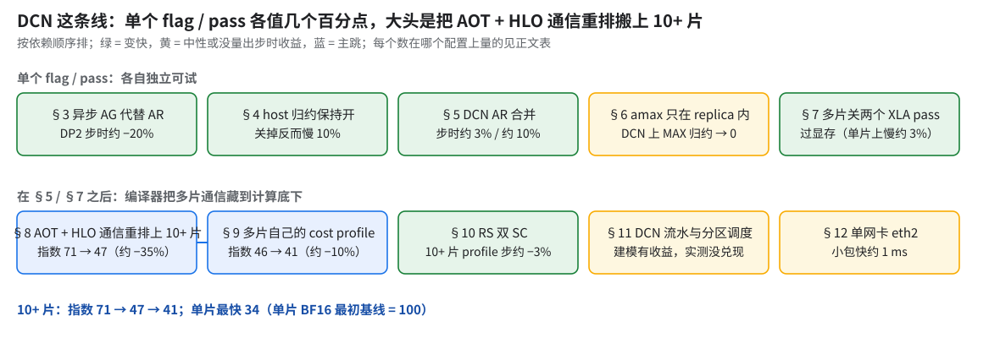
| feature | 收益 | 在哪量的 |
|---|---|---|
| §3 异步 AG 代替 AR | DP2 步时约 −20%，弱扩展 65% → 80% | 小号模型 1 vs 2 × 4x4x4 |
| §4 host 归约保持开 | 关掉反而慢 10%；10+ 片关掉慢 1.9× | 小号模型 DP2；大号模型 10+ 片 JIT |
| §5 DCN AR 合并 | 合成基准 2.6–2.8×；大号代理 DP2 步时均值约 −3%、中位约 −4%；大号 2 × 4x8x8 JIT 步时约 −10% | 依次为 10+ 片合成基准、大号代理 DP2、大号 2 × 4x8x8 JIT |
| §6 amax 只在 replica 内 | DCN 上的 MAX 归约从几十条 → 0；步时未量 | 小号模型 2 片 AOT |
| §7 多片关 decomposer / pipeliner | 让 DP2 / 比 10+ 片小的多片配置过显存；单片 BF16 上关它慢约 3% | 大号模型 AOT |
| §8 AOT + HLO 通信重排上 10+ 片 | 指数 71 → 47（约 −35%，吞吐约 +50%） | 大号模型 FP8 10+ 片 |
| §9 多片自己的 cost profile | 指数 46 → 41（约 −10%） | 大号模型 FP8 10+ 片，同代码同 flag |
| §10 RS 双 SC | 单片到 34；10+ 片 profile 步（抓 profile 那几步的中位步，下同）约 −3% | 两处都叠着别的改动 |
| §11 DCN 流水与分区调度 | 建模有收益，实测没兑现 / 无 10+ 片可比实测 | — |
| §12 单网卡 eth2 | 小包快约 1 ms；小号 2 片弱扩展约 90% vs 85% | 微基准；小号模型 |
四堵墙：显存（一跨 DCN 就 OOM，§7）、编译（HLO 通信重排在多片上编不过，§8）、带宽（AR 只有三四成线速，§12）、发起次数（21 ms 地板，§2、§5）几乎同时出现；坏节点（§14）不算墙，但把步时搅成双峰，让前面每一刀都难量准。最后一跳靠的是把单片 AOT + HLO 通信重排搬到 10+ 片，并避开坏 cube。
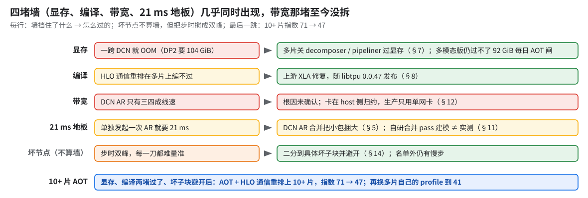
1.问题：为什么非走 DCN 不可
| 事实 | 数字 |
|---|---|
| 一个 v7x pod | 144 个 4x4x4 cube = 9,216 芯片 |
| 单个 ICI slice 上限 | 有尺寸上限（见官方规格页），再大只能拆片走 DCN；32 cube（8x16x16，2,048 芯片）只是 GKE 常用形状 |
| 跨 slice 的通信 | 永远走 DCN，哪怕在同一个 pod |
| 每芯片带宽 | ICI 1,200 GBps 双向（每轴 200 GBps 双向）；DCN 100 Gbps（每 host 4 芯片 → 2 × 200G 网卡） |
| DCN | 不是无阻塞网络 |
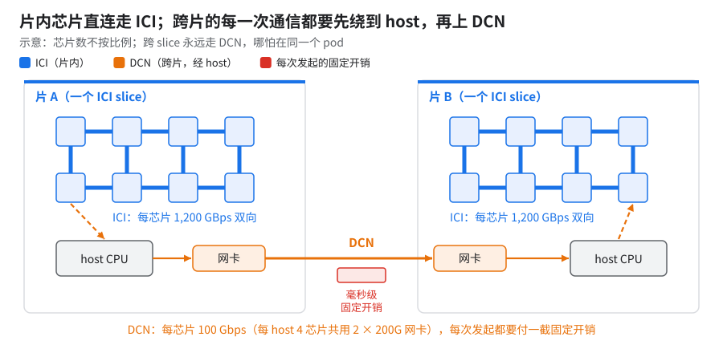
看哪里：右半边绕 host 的那条路和红色「固定开销」（示意）。
实测布局 10+ × 4x8x8（num_slices: N、dcn_data_parallelism: N、ici_fsdp_parallelism: 512）：片内 FSDP 走 ICI，片间 DP 走 DCN。
为什么不用更大的 ICI DP：小号模型在单个 2,048 芯片 slice 上从 64 芯扩到 2K 芯约慢 45%（两种算法的口径没统一，结果都落在这一档），对照 GPU 只慢约 7%；主因是拓扑与 GSPMD，不是 DCN：
- 一个物理轴被多个逻辑轴共用（影响 50% 以上；为什么伤带宽见 01 §2，JAX
mesh_utils缺省就不拆物理轴）。按 DP / FSDP / EP 通信路径的对称性，2,048 芯拓扑从 8x16x16x2 改成 8x8x32（只有理论分析，没有实测对比）。 - 1,024 芯单片（8x8x16）上同类拓扑改动快约 10%；同一 profile 里 GSPMD 插的全 mesh AR 有两百多个 op、合计约占步时一半——两者并列出现，没单独归因；与 DCN 无关 [推断]。
- 32 / 64 芯 5 组对照：
- 跨 DCN 不贵：2 片 × 2x2x4 DCN DP=2 加 AR 优化后每 device 吞吐约等于单片 [推断]，与同规模 ICI DP 持平；优化前也只低约 1%（常被引用的「99.x%」即此）。
- 贵的是 mesh 映射：同 2x4x4、ICI DP=2 × FSDP=32，默认 mesh 让 FSDP 摊到 32 芯而非紧凑 16 芯，AG 延迟 ×4.7，通信占比 30% → 50%，吞吐约 −25%（按步时算慢约 30% [推断]）。强制 2x2x4 子拓扑后恢复。
- 按带宽估算，DP over DCN 本应比 DP over ICI 快 10–20%，目标弱扩展 ≥ 90%；实测一上 DCN 只有七成出头。小号模型 256K 序列从 1k 芯扩到 2k 芯，线性加速比也约 70%——这个数只有结果，没有配套的 profile 或拆账，原因没定位。
2.怎么量出来的：三层测法
先回答「DCN 怕什么」，再决定动哪一刀。只看训练步时分不清是网卡、集合通信还是调度的问题，所以分三层量：
| 层 | 测什么 | 结果 |
|---|---|---|
| 网卡 | 2 × 2x2x1，两块 200G，MTU 8896，裸 ppermute |
365 Gbps/host（约 90% 线速） |
| 集合通信 | 同上，BF16 AllReduce 256 MiB/device | 约 146 Gbps/host（约 400 的 35%） |
| 集合通信，DP 扫描 | 2x2x1 slice，DP=2/5/10 | 算法带宽 2.54 / 1.65 / 1.40 GB/s/device，ring 等效恒定 2.4–2.65 → 每 host 约 20 GB/s ≈ 163 Gbps [推断] |
| 训练 | 大号模型截短层数的代理，2 × 2x4x4，DP1 → DP2 | 双片效率约 75% |
| 10+ 片合成基准 | 10+ × 4x8x8，DCN AR | 见下表 |
10+ × 4x8x8 DCN all-reduce 基准（host 侧耗时中位，ms；每格 libtpu 0.0.48 / nightly 0.0.50）
| case | 不合并 | variadic 合并（阈值 1 GiB） | 读法 |
|---|---|---|---|
| 大号模型反向 28 个梯度 AR | 194 / 192 | 71 / 74 | 快 2.6–2.8×；HLO：28 包 → 2 包（阈值以内、彼此独立的 AR 按 dtype 各捆一包；有串行依赖的捆不了，见下），上线字节减半 |
| 6–36 KiB × 1 | ≈22 | ≈22 | 地板 ≈21–22 ms |
| 160 KiB × 1 | 80 / 69 | 24 / 24 | 不合并时整体偏高，HLO 与 serial（24 ms）同一程序，原因未知 |
| 15 MiB × 1 | 65 | 65 | |
| 64 MiB × 1 | 158 | 160 / 191 | nightly 分两群（7 个 154–158、13 个 180–236），设备侧 140 ms 不慢、多在 host 侧；「别的作业抢 DCN」证据不足 |
合并后贴着「同字节单个包」65 ms 下限；不合并时设备侧 151 ms 都在等 DCN。
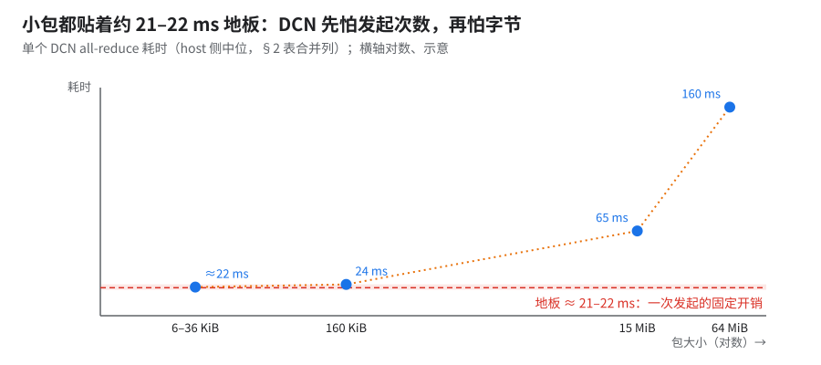
看哪里：左边那段平的——包再小也压不到地板以下（横轴对数，示意）。
- 合并只在梯度彼此独立时有用（§5 动图）；21 ms 地板含 Python 派发、上百个进程取最大。
- 「P99 100–600 ms」主要是屏障后首个样本（小包慢 3–34 倍）；去掉后大包 456 样本 0 个超 2× 中位，只有小包串行有真尾巴（约 7% 的样本，多出约 180 ms）。
- 基准自带 2× 字节放大（bf16
[1,1,N]tile 成T(2,128)，64 MiB 单包用例实际搬 128 MiB），真实梯度上合并收益会更小 [推断]。 - 按实际上网字节算，大包的出向速率和上面集合通信层的 AR 实测同量级，网卡远没跑满 [推断]；「数据量 ÷ 耗时」的 0.2–0.46 GB/s 不是带宽。
同一套基准换切法（64 chips，同一批 16 台 host）
| 布局 | 28 个梯度并发：不合并 → libtpu 合并 | 串行 | 小包单 AR |
|---|---|---|---|
| 2 片 × 32 chips（每片 8 host） | 76.5 → 25.9 ms（3.0×） | 86–391（极抖） | 2.9–3.1 ms（102 KiB） |
| 16 片 × 4 chips（每片 1 host），旧 libtpu | 168.0 → 58.7（2.9×） | 253–269 | 14.2–14.5 |
| 16 × 4，换新 libtpu | 190.7 → 61.7（3.1×） | 255–292 | 16.7–17.6 |
| 16 × 4，MaxText 侧私有合并 pass，稀排（注 1） | → 92.4（比 libtpu 慢 50%） | ||
| 16 × 4，同一 pass 密排（dense，校验通过，注 2） | → 62.0 / 61.2（pre / pre+post） | ||
| 10+ × 4x8x8（上面那组 10+ 片合成基准；上百台 host） | 194 → 71 | 267–281 | 21.8（6 KiB） |
读表：合并收益各规模不变；同为 64 chips，16 × 4 比 2 × 32 慢 2.2–4.6×。注 1：稀排是把 bf16 按 4 字节打包 [推断]，必须密排。注 2：pre / post ＝ 这个 pass 挂在调度前（PRE_SCHEDULER）/ 调度后（POST_SCHEDULER）跑，pre+post 是两处都跑；只追平 libtpu，POST_SCHEDULER 只挪 2 个候选，编译 ×3（§5）。
地板随切片数上涨（表外补点）：64 MiB 59.6 → 100.4（8×4）→ 111.0（10×4）→ 158.5 ms；5×4 小 AR 2.2–3.6 ms；同集群硬件微基准补测（非独占）2×4x4x4 合并并发 22.6 ms 起。
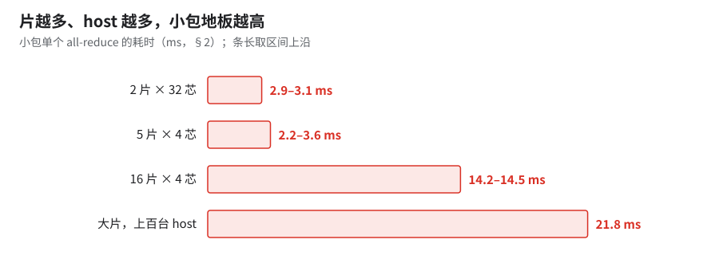
看哪里：最后一根柱子远高于按片数外推，说明还和总 host 数有关 [推断]；四点不是同一次测的。
为什么：跨片的每次通信都要先绕到 CPU，小包时这段固定开销就是全部耗时；开销随片数涨 [推断]（上图）。
GPU 上相当于：没有 GPUDirect RDMA、要经 host 内存中转的 NCCL（类比）。
把握：文档证实 · 出处：Cloud TPU Multislice 文档（DCN 传输经 host；libtpu 的 DCN flag 名是
megascale_grpc_*，芯片到 host 这段走什么文档没写）；本书 §12（全互联算法）；随片数涨是推断
64 MiB 那组是否符合带宽项 2(S−1)/S，未核：59.6 ms 那点是哪种布局，不确定。
片内 ICI 也挑形状（硬件微基准，整片 all-reduce busbw，每 device）：
| 形状 | 1 GiB busbw（GB/s） | 读法 |
|---|---|---|
| 4x4x4（对称立方） | 366–370 | 最好 |
| 8x8x8（对称立方） | 约 330 | 对称大片也高 |
| 8x8x16 | 约 256 | 一轴加长就掉 |
| 4x8x8 | 约 170 | 实测集群跑的片形 |
| 4x4 平面 | 约 165 | |
| 4x4x8 里的 4x8 平面 | 约 148 | 比 4x4 平面还低 |
| 4x4x8 | 140–142 | 最差 |
| 单沿 x / y / z 任一轴 | 约 85 | 各形状一致，长轴不慢 |
- 消息越大越差：4x4x8 在 256 MiB 时 207–226 GB/s，到 1 GiB 掉到 140 [原因未查]。验收要扫消息尺寸，别只测一档。
- 低的是各轴不等长时的整片算法，没把长轴链路用满 [推断：没抓 profile]（机制见下）。
- 片要少、大：地板随片数涨（上一段）[推断]。
- 片内优先选立方，避开 4 和 8 混搭：这只是本表的规律——差的 4x4x8、4x8x8 和 4x8 平面都是 4、8 混搭，同样不对称的 8x8x16 仍有约 256，「对称」本身不是那个变量。
- 两条冲突时（4x8x8 比 4x4x4 busbw 低一半多）怎么取舍没有实测。验收 ICI 按形状、按轴测，单轴健康不代表整片达标。
机制：片内形状为什么差这么多（尤其 4 和 8 混搭），未公开：分解在闭源 libtpu 里；JAX mesh_utils.py 的注释只说方形平面「可能」有更快的集合通信实现，编译后 HLO 里只有 1 条 all-reduce，看不到分解。另外这组是用覆盖整片的一维 mesh 测的，「4x4x8 最差」可能部分来自测法，未核。判据：按轴分别建 mesh 重测，或抓一份整片 all-reduce 的 profile。
3.异步 all-gather 代替 all-reduce（别让 decomposer 把 AG 改写成 AR）
前置：无，单个 flag；后续：§7 关 decomposer 是同一件事的另一半；11 B02
收益：小号模型 1 片 vs 2 × 4x4x4（DP2，JIT）步时约 −20%，弱扩展从约 65% 到约 80% [推断：以单片为分母]。
怎么考虑的：跨片 DP 一上，DCN 流量比按梯度大小估的大一截。HLO 里可以看到 XLA 把一部分 all-gather 改写成了 all-reduce——单片上这无所谓，跨 DCN 时字节翻倍。所以选的不是「把 AR 做快」，而是「别产生这个 AR」。
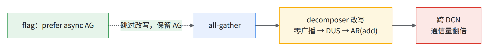
读图：实线是不开 flag 时的路径，虚线是 flag 把它拦在改写之前。DUS ＝ dynamic-update-slice；flag 治的是 XLA 自己改写出的 AR。
原理：本来只付 AG 那一半，改写后要付整个 AR，跨 DCN 字节翻倍。一个 AR 在带宽上等于 RS 加 AG（改写路径见上图）。保留成 AG 还顺带绕开了 host 上的加法（§12）。
把握：文档证实 · 出处：Scaling Book「Sharded Matrices」章（AllReduce ＝ ReduceScatter ＋ AllGather）；本书本节示意图
怎么开：--xla_tpu_prefer_async_allgather_to_allreduce=true（平台 flag，放 LIBTPU_INIT_ARGS）。确认生效：优化后 HLO 里 decomposer 改写出的那批跨 DCN AR(add) 换成 all-gather [推断：由机理推出，未实测验证]。
- 它进的是共享 flag 文件，疑似拖慢单片（大号模型 1–2%，见 02 §17.3）。单片没有 DCN，上面那笔账不存在，若真变慢是别的原因 [推断]，没有结论。
- 「AG 改写成 AR 后 DCN 流量翻倍」被实测支持；它和 §4 的 host 归约是联动的，两个 flag 要一起 A/B。
4.host 归约保持开（微基准赢家 ≠ 训练赢家）
前置：§2 的三层测法；后续：§12 单网卡的结论建立在 host 归约开着的前提上
收益：这是一条反例——关掉它，微基准带宽翻倍，训练反而变慢：
| 场景 | 关 host reduction 后（前两行同时调 16 MiB shard；10+ 片那行只关 host reduction、不调 shard） |
|---|---|
| 微基准 | 162 → 331 Gbps（TCP 上限的约 85%） |
| 小号模型 DP2 | 步时 +10%（被拒） |
| 大号模型 10+ 片 JIT（同配置只多关这一项） | 慢 1.9×，而且是每一步都慢，不是偶发慢步（§14） |
怎么考虑的：DCN AR 默认在 host CPU 上做加法（设备侧 HLO 里 0 个 add），默认 8 MiB shard 让同步轮数翻倍，所以 AR 只有四成多线速。把它和 shard 一起改，微基准确实漂亮，但训练步时说了算。
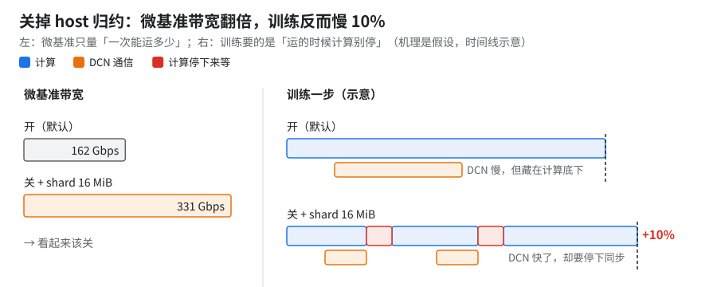
看哪里：右边——DCN 本来藏在计算底下，快了反而要停下同步（红块；机理是假设，示意）。
原理（假设）：微基准只量「一次能运多少」，训练要的是「运的时候别让计算停下」。这解释不了 10+ 片每步恒多的那一截，更像同步轮数随片数放大 [推断]。
判据：2 片、10+ 片关它各抓一份 profile。
把握：推断 · 出处：本书 §12、§14 的数据；
--xla_tpu_use_megascale_host_reduction无公开文档；关掉后设备侧怎么归约未公开
怎么开：默认就是开（--xla_tpu_use_megascale_host_reduction=true）。要试就和 shard 一起：--xla_tpu_use_megascale_host_reduction=false --megascale_max_reduction_shard_size=16777216，以训练 step 为准。
坑：只关前者、不调 shard，慢 1.9×（上表第三行）。
5.DCN all-reduce 合并（把彼此独立的小梯度捆成大包）
前置：§2 认出 21 ms 地板；后续：§8 多片 AOT 里改由 MaxText 侧的 pass 接手合并；§11 的 forward hoist 是同一思路用在前向
收益：
| 配置 | 前 → 后 |
|---|---|
| 大号模型截短层数代理 DP2，libtpu combiner 1 GiB | gRPC 发送次数约 −25%；步时均值约 −3%、中位约 −4%（跨集群只说明方向） |
| 大号模型 2 × 4x8x8 JIT，同一 flag（开 / 关各 1 样本） | 步时约 −10% [推断]，HBM 84 → 91 GiB |
怎么考虑的：DCN 先怕的是发起次数，不是字节（下图）。试过三条路：
看哪里：第一条里 28 截红色地板（动图，同一时间尺度）。
- libtpu 自带的 combiner（上面两行实测）。
- MaxText 侧的私有的 DCN all-reduce 合并 pass：必须按 bf16 实际字节密排，按 4 字节稀排会比 libtpu 慢 50% [推断]；密排后 62.0 ms，与同布局的 libtpu 合并（58.7–61.7 ms，§2 第二张表）持平，pre+post 两处都跑也没有收益。多片配方里由它接手（与 libtpu combiner 在 10+ 片上谁快没有对照测过）。
- 大 AR 降成 AG（
--megascale_lower_all_reduce_to_all_gather_threshold=67108864，小号模型 DP2）：AR 缩短约 1/5，折合步时 1–2%，在噪声里（同代码复跑波动 3–5%）；没有进默认配置。
小号模型 DCN DP 的 flag 扫描（1 vs 2 × 4x4x4，各 1 次、5 步；基线自己就有约 5% 波动）：
- shard 16 MiB：在基线波动带内。
- sunk-done：略高于基线上沿。
- combiner 16 MiB：慢约 15%，这一档没有收益。
- async AG + combiner + SC offload：快约 5%，复跑只快 1–2%。
sunk-done 即 --xla_tpu_enable_sunk_dcn_allreduce_done_with_host_reduction，从 flag 名看是 host 归约时把 DCN AR 的 done 往后沉 [推断：只从 flag 名读出]。
DP all-reduce 优化 flag 组（--xla_tpu_enable_data_parallel_all_reduce_opt=true、--xla_tpu_data_parallel_opt_different_sized_ops=true）：上一代模型 FSDP32 × DCN DP2 上 1–2%。
原理：合并省的是固定开销，不是带宽（上图）。串行依赖的 AR 编译器捆不了（HLO 里仍是 28 个包），「串行 + 合并」一点不快；合成基准还省掉了 bf16 padding 的一半字节，真实梯度上收益更小 [推断]。
- 只用上游 MaxText：
--xla_tpu_dcn_all_reduce_combiner_threshold_bytes=1073741824（libtpu combiner，阈值 1 GiB），或不设、用 libtpu 默认。 - 用这套方案的多片配方：
--xla_tpu_dcn_all_reduce_combiner_threshold_bytes=0关掉 libtpu combiner，交给私有的 DCN all-reduce 合并 pass（上限 1 GiB）。两种做法在 10+ 片上谁快，没有 A/B。 - 确认生效：优化后 HLO 里跨 DCN 的梯度 AR 包数变少（合成基准 28 → 2，按 dtype 各一包）；真实模型的包数要自己数。
- 只用上游 MaxText 时别照抄
=0：上游src/里没有接手 DCN 合并的 pass，设 0 就没人合并了，梯度 AR 一个个发 [推断：由多片配方设 0 的前提推出]。 - combiner 会多占显存（上表 84 → 91 GiB），贴着可用上限 94.74 GiB 时要先过显存（这是 2 片 JIT 实机 HBM，JIT 不开 HLO 通信重排，不走 placement 准入线）。
=1073741824是只用 libtpu combiner 时的写法，不是多片生产值，别照抄。- 私有合并 pass 容易出的静默错误和防法见 §11。
6.FP8 amax 只在 replica 内求 MAX
前置：FP8 训练（04）；后续：§8 多片 FP8 AOT
收益：小号模型 2 × 64 芯 DP=2 AOT 上，DCN 上的 ALL_REDUCE/MAX 从几十条 → 0。步时收益没量；验证范围见 04 §10（无大号模型、无步时）。
怎么考虑的：FP8 每个量化点都要求 amax（绝对值最大）。数据并行的各副本拿的是不同样本，但 scale 只需要副本内一致；跨片求一次全局 MAX，就是每个量化点多交一次 21 ms 级的 DCN 地板。
原理：MAX 只在 replica（片内 FSDP 组）内归约，跨 DCN 的那一跳省掉。各片 scale 可能略有不同，但每片内部自洽。
坑：当前实现未在大号模型上重新验证。
7.多片关 decomposer / pipeliner（过显存墙）
前置：§3（同一个 decomposer）；后续：§8 多片 AOT 必须先过显存
收益：让大号模型 DP2 和比 10+ 片小的另一个多片配置（每片仍是 FSDP512，下称较小多片配置）的 AOT 过显存——DP2 原本要 104 GiB；关掉后较小多片配置也过（heap 约 83 GiB）。代价：单片 BF16 上关它慢约 3%（两个 pass 一起关，02 §16.4）。
怎么考虑的：跨 DCN 后显存超限。把序列从 8K 缩到 6K 只是绕开；抬高峰值的是两个 XLA pass：all_gather_decomposer 和 XLA pipeliner（collective-pipeliner-forward；不是 MaxText 侧的 placement，02 §16.1）。
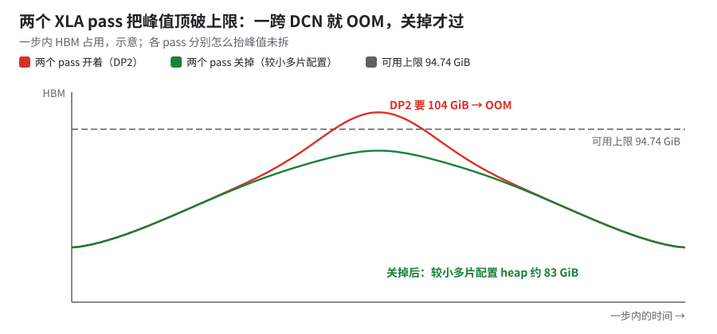
看哪里：红线比绿线高出的那截（示意；两条线不是同一配置）。
对照：较小多片配置跑 FP8、不关这两个 pass，AOT 的 HLO 临时量 157 GiB，是 BF16（关 pass）75 GiB 的 2.1×。
怎么开：XLA_FLAGS 里 --xla_disable_hlo_passes 加 all_gather_decomposer、collective-pipeliner-forward。当前规则：只有 BF16 和跨 DCN 的 FP8 关这两个 pass，单片 FP8 开着（由配置叠加脚本按 dtype × 片数注入）。AOT 下要看编译端的环境（11 B01）。
✅pipeliner 在多片上要反过来设1 片关它慢、2 / 8 片关它快（数见 02 §16.2）。多片配方关它是为了过显存，不是为速度选的 [推断]，速度上恰好也对。
8.AOT + HLO 通信重排上多片（这章最大的一跳）
前置：§7 过显存、§5 DCN 合并、§6（FP8）、XLA 修复（见下）、避开坏 cube（§14）；后续：§9 换多片自己的 cost profile、§11
收益：大号模型 FP8 10+ 片，指数 71 → 47（约 −35%，吞吐约 +50%），四次运行 loss 逐位一致。对比的是同规模 JIT、HLO 通信重排关的干净基线（排除坏 cube 后，指数 71）。
怎么考虑的：单片上 AOT + HLO 通信重排（理念见 02 §7）已经把通信藏得很好，多片却一直跑 JIT、HLO 通信重排关——不是不想开，是开不了：
- 编不过：小 RS 合并（HLO 通信重排里的一项）的 tile assignment 报「should have 512 devices but has 1024」这类错（device 数随片数变），DP2 和较小多片配置都报
INVALID_ARGUMENT。根因在 XLA，需 libtpu ≥ 0.0.47（含上游 XLA 修复）；更早的版本上多片只能关 HLO 通信重排。 - two-stage RS 在多片 AOT 上被 skip：多片 AOT 时 device assignment 只覆盖一片，按全局 ID 对不上。拆分要按片内拓扑来解，对不上就不拆（fail closed）。
- 缺多片 cost profile：这一跳能用的 trace 只有 10+ 片 JIT 基线（HLO 通信重排关）的，所以之后还有 §9。
原理：多出来的时间主要是跨片通信没藏住（JIT 下 1 片 vs 4 片步时 +25%，拆账见 §15.1）。AOT + HLO 通信重排让编译器按 cost profile 重排集合通信，塞进计算的空档。
看哪里：下一行红色空档怎么缩——通信块没变短，只是换了位置（动图，示意）。
怎么复现（多片配方，相对单片关 pipeliner 配方的差）：
| 项 | 1 片 | 10+ 片 |
|---|---|---|
片数 / dcn_data_parallelism / 全局 batch |
1 / 1 / 1,024 | N / N / 1,024 × N |
| 每 device 的 batch、seq、ICI FSDP、remat、PDB | 相同（PDB 2、seq 8192、FSDP 512、custom remat；MLA Splash 残差放置开关选 device） |
相同 |
| 代码 | 单片基线版 | 单片基线版上多两项：DCN 通信优先排进重叠窗口、DCN 打包算子按最小代价计（§11）；two-stage RS 按片内局部拓扑解（上面第 2 条）。下称多片版 |
| HLO 通信重排包含哪些项 | 小 RS 合并、two-stage RS、placement、融合行为标注 | 同左，另加私有的 DCN all-reduce 合并；placement 里的反向 while 流水、placement 搜索、ICI 重搜都开 |
| 编译期 LIBTPU flag | 脚本默认 | 另加 --xla_tpu_dcn_all_reduce_combiner_threshold_bytes=0 --xla_tpu_split_local_ar_for_dcn_ar_threshold=32 |
| cost profile | 1 片自己的 | 10+ 片 JIT 基线的 recovered trace（HLO 通信重排关） |
| MLA CP 策略覆盖配置 | "" |
a2a |
| XLA pipeliner | 关 | 关 |
| jax / jaxlib / libtpu、镜像 | 0.11.0 / 0.11.0 / 0.0.48，同一 python digest | 相同 |
两个 LIBTPU flag：前一个设 0 是关掉 libtpu 自己的 DCN AR combiner、交给私有的 DCN all-reduce 合并 pass（§5）；后一个从名字看是「跨 DCN 的 AR 前把片内那段 AR 拆出来」的触发阈值 [推断：只从 flag 名读出]，语义和单位未公开（libtpu 闭源，公开文档未说明）。多片配方在片数 > 1 时把两个一起写死，书里没有单独开关它们的对比；换集群照抄或删掉都要自己 A/B。
可复现，差别只在落没落到坏 cube：控制变量是编译产物、镜像、配置、集群均相同，只差分到的 cube。步时取首个 worker 日志的每步耗时，step 15–49 共 35 步。
| 运行 | cube | 稳态中位（均值），指数 | 慢步（> 1.2 × 中位） | loss |
|---|---|---|---|---|
| 10+ 片 AOT 中间档 | 避开坏 cube | 47（48） | 1/35（一步到 86） | 基准 |
| 独立复现 | 换一批，避开坏 cube | 47（47） | 0/35，最慢 49 | 50 步逐位一致 |
| 同一 pickle，落到坏 cube 上（三次） | 各有 16 个节点在同一个坏 cube 上 | 48 / 73 / 73 | 15 / 20 / 32 步（最后一次慢步在 72–93） | — |
- 独立复现对 10+ 片 AOT 中间档：中位慢不到 1%，均值快 1–2%；避开坏 cube 后 10+ 片不再双峰。吞吐（tokens/s/device，中位）两边差不到 1%；独立复现里 10+ 片各自中位的极差不到 1%。
- 另一组独立复现因节点故障未跑完，已跑窗口里中位 / 均值同为指数 47、0 慢步。
- 换 cube 带来每步 1–2% 的波动（§15.3）[推断：只有 3 次运行、各取 profile 窗口 3 步；稳态日志中位只差不到 1%；未排除同时段其他作业的 DCN 负载]。
运行时的其他读数（10+ 片 AOT 中间档 / 独立复现）：
| 指标 | 10+ 片 AOT 中间档 | 独立复现 |
|---|---|---|
| 规模 | 10+ × 4x8x8，DCN DP10+ × ICI FSDP 512 | 相同 |
| 运行时 HBM 峰值 | 91–92 GiB；同工具读 xplane 与独立复现逐字节相同 | 91 GiB × 7 device，92 × 1（总量 94.74；只采了一台 host 的 8 个 device） |
| 编译期估计 | temp 99 GiB，total 更高 | 同一份 pickle |
| AOT 加载（Loading → Loaded） | 187 s | 185 s |
| 提交 → step 0 | 约 8–9 min | 约 10 min |
从源码重编一份，编出来是同一个程序：编译参数从编译清单程序化读出，只关 HLO dump、换上传位置。
| 生产编译（48 核编译机） | 独立重编（64 核） | |
|---|---|---|
| 调度前重排拿到的 HLO | 记字节数 | 逐字节相同 |
| 调度后重排拿到的 HLO | 记字节数 | 逐字节相同 |
| HLO 通信重排统计行（去掉耗时） | 28 行 | 27 行逐字相同；唯一差异是 placement 自己的墙钟计数 |
CompiledMemoryStats 五项 |
— | 逐字节相同 |
| 总墙钟 | 约 2 h 45 min | 约 3 h 25 min |
重编产物未上卡验证。
- 判 OOM 别只看编译期 temp：多片 AOT 编译期 total（arg + out − alias + temp）与 temp 都超配置的 96 GiB，实际没 OOM；1 片 AOT 的 knockout 实验里只关 QAG 那组同理（knockout 基线＝满配（指数 37）再关 pipeliner，指数 45，见 09 §3.2）：temp 超上限，实机 89 GiB。两处 temp 都比运行时 stack 高估一截。
- 坏 cube 会把同一个程序拖成双峰：上表三次落到坏 cube 的运行就是这样，先按 §14 排掉坏 cube 再量。
- §8 这份 pickle 的 cost profile 是 JIT、HLO 通信重排关时采的，和开了 pass 的图对不上——这就是 §9。
- 10+ 片比 1 片多出的那截去哪了，见 §15。
10+ 片 JIT 基线的编译耗时（作为对照）：jax.devices() 到 step 0 结束约 42 min ＝ 第 1 次编译约 22 min ＋ 同一程序再编一遍约 18 min ＋ 到 step 0 完成约 1 min [推断：时间戳相加]。
- 第二次是 step 0 输入的 sharding 和
lower()不一致导致的重做；step 0 自报的约 1,100 s（≈ 18 min）只含它加第一步。 - 大头在 Python：在 1 cube 上拆开测，每次 trace 约 3 + lowering 约 12 min，XLA 编译只约 2 min；10+ 片规模的 XLA 没单独量。
- 按两个时间点切窗会得到「trace/lower 34 + XLA 7 min」，但第一窗已含第 1 次 XLA 编译，不是分阶段计时 [推断：时间戳对照]。AOT 把这些搬到编译机上，上卡只剩加载（上表约 3 min）。
9.多片自己的 cost profile（同代码同 flag，只换 profile）
前置：§8（要先有一份能跑的多片 pickle 才能采 trace）、§10（双 SC 改了图，profile 要在双 SC 下采）；后续：生产配置
收益：大号模型 FP8 10+ 片，指数 46 → 41（约 −10%）；代码和 flag 逐项相同，只换了 cost profile [已证实：编译配置清单]，但分到的 cube 也不同（见下），是这章最接近单变量的一刀。
怎么考虑的：在 §8 上叠 RS 双 SC（§10）、一批调度改动、真实数据和检查点，步时只从 47 到 46。profile 显示 RS 确实快了，但收益被吃掉大半（读法第 1 条）。原因是 cost profile 和图对不上：它采自较小多片配置、单 SC、不开检查点，换到 10+ 片、双 SC 的图上 SC 集合通信大量 miss（见下）。所以拿这份 pickle 在同形状、同片数、同 SC 配置上跑一次采 trace，再重编。
原理：通信本身没有变快，变的是排位（读法第 2 条）。cost profile 里能按名字对上的 SC 集合通信多了，placement 估 RS 耗时不再靠缺省值 [推断]，于是把 RS 排进了计算底下。这是「cost profile 会过期」（02 §8、02 §16.3）反过来用。
怎么复现：先拿上一份 pickle 在同形状、同片数、同 SC 配置上跑出 trace，再用它重编。配置差（多片版 pickle → 换 profile 前 → 换 profile 后）：
| 项 | §8 多片版 pickle | 换 profile 前 | 换 profile 后 |
|---|---|---|---|
| 代码 | 多片版 | 多片版加两处改动：跨 DCN 的 FP8 AOT 改用 10+ 片 DCN DP、RS 用两颗 SparseCore | 同一份源码，只差 cost profile 路径 [已证实] |
| 编译期 LIBTPU flag | 基线 | 只多一条 --xla_tpu_use_single_sparse_core_for_reduce_scatter_offload=false（§10）；配置里有单测断言这条 |
同左 |
| cost profile | 10+ 片 JIT 基线 recovered trace | 较小多片配置（不开检查点）的 trace，采集时是单 SC RS | 同配置换 profile 前那份 pickle 自己跑出的 trace |
| placement pass 的 ICI 重搜开关 | 开 | 开，3 轮 | 开，3 轮 |
| 数据 | synthetic；不按数据集分别记 loss | lazy 真实数据（mmap_npy）；按数据集分别记 loss |
同左 |
| 检查点 | 关 | 开 | 开 |
| jax / jaxlib / libtpu（pickle metadata） | 0.11.0 / 0.11.0 / 0.0.48 | 相同 | 相同 |
| 不变 | per-device batch 2、seq 8192、GBS 1,024 × 片数、DCN DP10+、打开 Muon 批量 NS 开关（每批 16）、CP a2a；XLA_FLAGS 都关 decomposer 和 pipeliner |
← | ← |
- 换 profile 前 → 后只有两个变量：cost profile 和分到的 cube。
- 多片版 → 换 profile 后，代码还多了一批调度改动，单项收益未拆（机制见 §11）：多 SC 联合搜索、各 region 独立搜索会话、DCN 打包算子按最小代价计、限制 DCN 流水的挂载范围、FP8 下保留集合通信调度、封闭 DCN region 独立搜索、多片 two-stage RS、编译端与运行端的跨 DCN flag 对齐。
- 运行时
LIBTPU_INIT_ARGS里仍有--xla_tpu_num_sparse_cores_for_scatter_offloading=1，但 profile 里 RS 在两条 SC lane 上都出现，所以以编译期为准 [推断]。
各配置的步时（首个 worker，全部步中位；检查点慢段也算在内，中位不受影响）：
| 配置 | 步时指数 | 样本量 |
|---|---|---|
| 换 profile 前，冷启动段 | 121（没跑稳，不计） | 十几步 |
| 换 profile 前，稳态 | 46 | 约 250 步 |
| 换 profile 后，长跑 | 42 | 数千步 |
| 换 profile 后，长跑第二段 | 41 | 约 500 步 |
| 换 profile 后，同配置另一作业 | 41 | 约 200 步 |
- 长跑加载的是换 profile 后的 pickle [已证实：运行日志里加载的编译产物路径]。每步 FLOPs 计数相同 [推断：同模型同形状]。
- 比 §8 的 47 快约 15%（长跑 42 那段约 10%）。
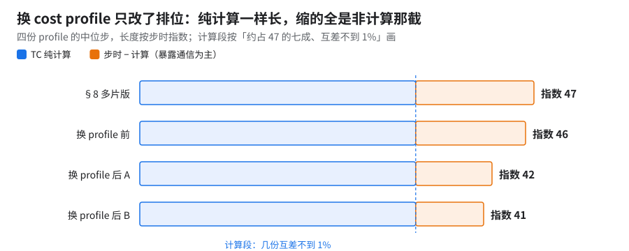
看哪里：蓝色段四根一样长（约占 47 的七成），变的只是右边那截（长度按指数，示意）。
按类别拆账：四份 profile（各取抓到的 3 步的中位步；除步时外，都写成相对 §8 多片版的变化）：
| §8 多片版 | 换 profile 前 | 换 profile 后（profile A） | 换 profile 后（profile B） | |
|---|---|---|---|---|
| profile 中位步（指数） | 47 | 46 | 42 | 41 |
| 暴露通信 | 基准（约占步时 25%） | −30% | −50% | −60% |
TC wait:reduce-scatter |
基准（约占步时 20%） | −30% | −65% | −65% |
TC host recv-done |
基准 | +80% | −30% | −8% |
TC wait:all-gather |
很小（§15） | 明显变大 | 回到很小（不在前 10） | 同左 |
TC wait:all-reduce |
基准 | 很小 | +140% | +20% |
TC wait:other |
基准 | +10% | +8% | +7% |
| SC 上 RS 忙（并集） | 基准 | −15% | −15% | −15% |
| SC 上 AG / AR 忙 | 基准 | 不到 1% / −35% | 不到 1% / ×2.0 | 不到 1% / +15% |
| 最大一组 RS（DCN AB 段之后那组）单次 | 100% | 85% | 85% | 85% |
读法
- §8 → 换 profile 前，profile 步约 −3%：RS 改由两颗 SC 做，单次快约 15%，TC 等 RS 少约三成 [已证实：profile]。但
recv-done多八成、等 AG 也变大，吃掉了大半收益 [推断：profile 是在较小多片配置、单 SC 上采的，与 10+ 片 DCN DP、双 SC 的图对不上]。这一步还混着一批调度相关改动、真实数据和检查点，没有拆开。 - 换 profile 前 → 后，约 −10%：RS 单次耗时没变、SC 上 RS 忙也没变；变的是 TC 等 RS 少一半、
recv-done少一半、等 AG 回到很小。两次也换了 cube，但 §15.3 里换 cube 只差 1–2%，这里差约 10% [推断]。 - §8 → 最后一份，合计约 −15%，其中绝大部分是 TC 等 RS 变少，其余各类加起来不到 1%。RS 本身变快最多能解释其中约 45%，其余约 55% 是重叠变好 [推断：上界，假设 RS 快出来的部分全在关键路径上]。
编译器自己怎么看（两份 AOT 编译日志里 post-scheduler placement pass 的统计行，加 region 汇总报告；都是建模数，不等于步时）：
| 换 profile 前 | 换 profile 后 | |
|---|---|---|
| cost profile 的 SC 未命中数 | 基准 | 少一半多 |
| cost profile 的精确命中数 | 基准 | 基本不变 |
| 预测收益 | 基准 | 约 1.7×（暴露减少、隐藏重叠增加两项都约 1.5–1.7×） |
| 搬动的候选数 | 基准 | 基本不变 |
| 选中方案 HBM 峰值（建模，十进制 GB） | 93 | 97（placement 搬动前 90） |
| region 报告最终 RS / AG 暴露合计 | 基准 | 都约 −60% |
| region 搜索耗时 | 约 51 min | 约 63 min |
- 按 region 类型，RS 暴露在跨 DCN 桥接段、虚拟 AB 段、while 循环段都约 −60%，尾段降到接近 0。
- 建模的 RS 暴露减少量和实测 TC 等 RS 的减少量方向、量级都对得上（实测约大 1.2×）[推断]。
- 代价是建模 HBM 峰值多约 4–5 GB。运行时峰值没读 [未核]。
- profile 跟着图走：改片数、改 SC 配置、改 DP，都要重采。借 10+ 片 profile 编 20+ 片 pickle 能跑（§16），但没单独验证过损失多少。
- 生产配置用的是长跑采的 trace，用它编的 pickle 未核。
- 新 profile 里哪些算子的耗时变了：只比了指纹和 miss 数，没逐条比 [未核]。
10.RS 用两颗 SparseCore
前置：单片 SC offload（02）；后续：§9（profile 要在双 SC 下重采）
- 单片：只换 FP8 cost profile 快约 7%；生产 nightly（单 SC）在 36；RS 双 SC + 新 profile + 双 SC 通信搜索到 34（36 → 34，快约 4%；step 15–29 极差不到 1%；见 02 §15）。三项一起改的，不是控制变量链 [推断]。
- 10+ 片：RS 单次快约 15%、SC 上 RS 忙约 −15%，profile 步约 −3%（和别的改动混在一起，§9）。
怎么考虑的：大号模型 FP8 的反向里，TC 等 RS 是最大的一块暴露通信（10+ 片约占步时 20%）。RS 已经 offload 到 SparseCore，但只用了一颗。
原理：每 device 两颗 SparseCore，RS 摊到两颗上并行。
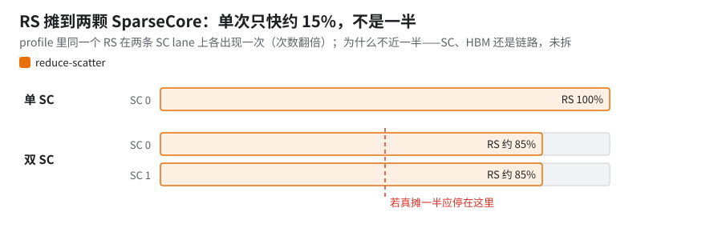
看哪里：虚线是「对半分」该到的位置；瓶颈在 SC、HBM 还是链路，未拆（示意）。
怎么开：编译期 --xla_tpu_use_single_sparse_core_for_reduce_scatter_offload=false。确认生效：profile 里 RS 出现在两条 SparseCore lane 上；编译端和运行端写法不一致时以编译端为准（§9，[推断]）。
- 生产 nightly 单片仍是单 SC，指数 36；所以单片最快的 34 不是生产默认。
- 指数 34 以下的单片数不能当基线：那种配置换成了合成数据、随机初始化、shard count 1，还打开了一个实验性的计算细化开关，可能打乱 DCN overlap 窗口。单片 34 那份的配置是真实数据（lazy 读取）、从检查点加载、
quantization_local_shard_count=8、PDB 2、seq 8192、计算细化开关关。 - 双 SC 改了图，旧 cost profile 会失配（SC miss 激增）——必须接 §9。
11.DCN 流水与分区调度
前置：§8（HLO 通信重排在多片上能编）、§5（私有的 DCN all-reduce 合并 pass）；后续：生产配置里的调度合并
收益：三件套版本建模有收益，实测没兑现；按机制重做的五件（下表）还没有 10+ 片可比实测。
怎么考虑的：多片的基线其实不差（小号模型 DP1 → DP2 约 95%；大号模型裁剪版 BF16 DP1 → DP5 双网卡、单网卡都在九成五以上，单网卡比双网卡快不到 1%）。三件套是私有的 DCN all-reduce 合并 pass、跨迭代 DCN 双缓冲、先 ICI 后 DCN 的分区搜索（每 session 5 ms 预算）：合并 libtpu 已做到，双缓冲和分区搜索建模收益没兑现。下面五件是按机制重做的：
| 机制 | 做法 |
|---|---|
| DCN 打包算子按最小代价计 | 「准备包」的那几条计算在排序时视为几乎不花时间（调度策略，不是真实耗时：这部分计算被 DCN 占用，不能拿来藏 ICI） |
| 多片 two-stage RS 按片内拓扑解 | 见 §8 第 2 条 |
| 封闭 DCN region 私有搜索 | 每个封闭 region 自己跑完 ICI / DCN 多轮搜索，再一波一波做全局 HBM 审计后合并。拿 10+ 片 DCN DP 的 dump 回放，速度约为串行的 2.2 倍，各 region 结果逐个一致 |
| DCN-only 流水限在锚点后继链上 | 只准挂在已选中 AB region 的后继链上，HBM 准入失败就回滚 |
| 前向 DCN 统计量 hoist（opt-in） | 每层要跨 DCN 归约的小统计量（单个 ≤ 64 KiB）逐层存下，出循环后合成两个父级 AR（下图）。只对大号模型 FP8 10+ 片配置、且开 HLO 通信重排时打开 |
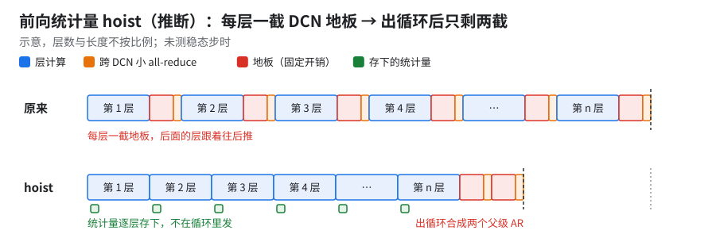
看哪里：上排每层一截红色地板，下排只剩两截（示意）。
原理：hoist 打的是 21 ms 地板（§2）[推断：按机制描述]；具体是哪种统计量，未核。
实测情况：hoist 版只做过几步短程，没有稳态步时；cost model 估 while 循环段和跨 DCN 桥接段都明显缩短（未实测）；有一处回退：BF16 较小多片配置上 DCN overlap 建模少约 2/3，E2E 建模反而略增。
⚠️这类 pass 容易出静默错误——都不崩、编得过，自己写调度 pass 时逐条防
错误 后果 防法 合并 DCN AR 时，新指令丢了原指令的 ISSUE owner 调度里出现「DEFER 了却没有对应 ISSUE」的集合通信，排位语义悄悄错 改写指令时把调度元数据（owner、阶段标注）一并搬过去，并断言每个 DEFER 都有 ISSUE 跨迭代双缓冲读到下一代数据（第 j 次迭代读到 j+1 的 buffer） 数值错但不报错 给每个 buffer 带「代号」证明，证明不了就 fail closed，不流水 5 ms 搜索预算按整步累加，不是每个 session 各 5 ms 后面的 region 没预算，搜索结果随 region 顺序变 预算按 session 计；测试里比较「打乱 region 顺序」的结果 另有两条同类约束：tile 要规范化，send/recv 的 channel id 要配对。two-stage RS 优先走 libtpu 自己的完整链路。
12.单网卡（eth2）而不是双网卡
前置：§4（host 归约开着）；后续：生产配置
💡要点
- 生产跑单网卡：所有生产 run 都是
--megascale_grpc_interface_prefixes=eth2,lo[已证实，日志 + JobSet]。10+ 片 JIT 基线是双网卡eth1,eth2,lo。- AR 的天花板在 host 侧归约，不在网卡。
收益：小包 AR 快约 1 ms；小号模型弱扩展单网卡全面更快；生产选单网卡不亏 AR 带宽，还躲开双网卡的尾延迟。
硬件：eth0 走 k8s 管理流量；eth1、eth2 各 200 Gbps，合计 400 Gbps 出向；eth2 在另一个 PCI 根上，推断属另一个 NUMA（未实测）。选网卡只认 LIBTPU_INIT_ARGS（§13）。
怎么考虑的（证据按从底到顶排）：
| 证据 | 网卡 | 结果 |
|---|---|---|
| 开 DRANET（K8s 动态资源分配的网卡驱动，让 Pod 拿到第二块数据网卡） | 双 | ring AR 等效从 0.8 Gbps 到单向约 90% 线速，AR 效率只有四成出头——网卡没问题，AR 卡在别处；ICI AG 对 DCN 影响 ≤ 5%，问题在集合通信层 |
| 独立复测（同一套微基准） | 1 vs 2 | AR 1、2 网卡都约 170 Gbps；ppermute 双网卡约 90%（§16.2） |
| 独立复测里的 v6e 对照，200 → 400 Gbps | 1 vs 2 | ppermute ×1.5，psum 只 ×1.3。psum 线速占比约 65%（单，对 200）→ 约 45%（双，对 400） |
| 小号模型 4x4x4 弱扩展（见下表） | 1 vs 2 | 单网卡全面更快，但有偶发尖峰（可达基线 3–4 倍）；双网卡尾延迟偏长，原因未定 |
| 5 片 1.5 KiB 小包 AR | 1 vs 2 | 单 2.23–2.39 ms（4 次），双 3.23–3.58 ms（8 次）；单网卡快约 1 ms |
| 硬件微基准，4 片 | 1 vs 2 | ≤ 4 片看不出差别（33.0 vs 33.4 ms） |
| 10+ 片双网卡 | 双 | 没有带宽增益，瓶颈在 host reduction |
| 小号模型 DCN CI | 单 | 默认 single（eth1,lo），启动脚本拒收手写 prefix |
小号模型弱扩展（只给效率）：
| 片数 | 单网卡 | 双网卡 |
|---|---|---|
| 2 | 约 90% | 约 85% |
| 5 | 约 80% | 约 70% |
2 片的回退里约 25% 是暴露出来的 send-done / recv-done。
- AR 吃不到第二块网卡：卡在 host 上的加法（下文）[推断]。
- 小包吃亏：两块网卡多一次切分和汇合，尾延迟变长。
- [推断] 跨 NUMA：双网卡时一半流量要跨 NUMA，没有实测。
「单网卡 50% 就是跑满」不成立：
| 口径 | 数 | 对单网卡 200 Gbps |
|---|---|---|
| §2 集合通信层 AR 146 Gbps/host | 400 的约 35% | 约 75% [推断] |
| 独立复测 AR 约 170 Gbps（1 / 2 网卡都是） | 400 的四成出头 | 约 85% [推断] |
| v6e 单网卡 psum 实测 | — | 约 65% [已证实] |
「35–45%」换到单网卡不是「50% 封顶后又跑了七八成」，而是同一个约 146–176 Gbps 的天花板换了个分母。双网卡只帮 ppermute / all-gather。
适用条件：这是 AR 卡在 host 归约的前提下的结论。换成不走 host 加法的路径（例如关 host reduction，或 AR 能多流、按网卡条带化发），AR 受网卡带宽限制时，第二块网卡可能有用；本书没测过这种情况。
为什么用 eth2：eth2 是独享的数据卡，推荐用它；eth1 所在的物理卡同时挂着管理 NIC 和数据 NIC。CI 基线用 eth1。
12.1 原理：host 上的加法到底加谁的数据
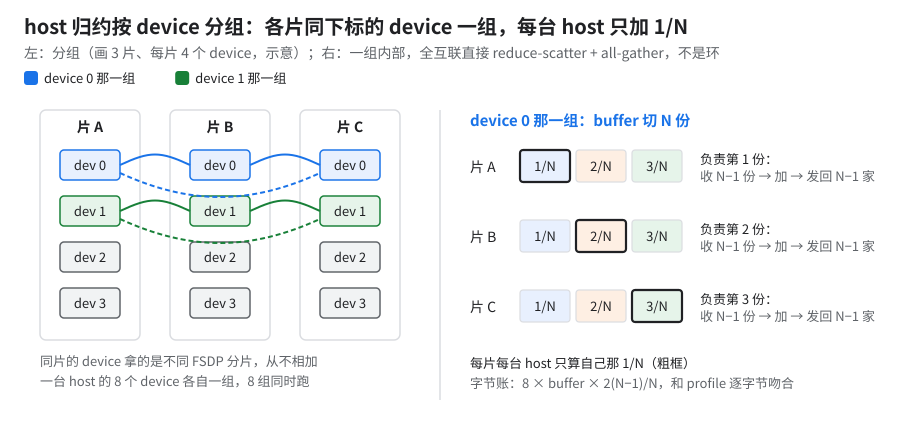
看哪里：左边同色连线——只有跨片同下标的 device 相加，片内从不先加（示意）。
- 按 device 算：N 片就是 N 人一组，每片 512 组；一台 host 的 8 个 device 各自独立做。同 chip、同 host 的 device 拿的是不同的 FSDP 梯度分片，彼此从不相加。
- 算法是 N 方直接 reduce-scatter + all-gather（全互联，不是环，N＝片数）：字节账 8 × buffer × 2(N−1)/N，和 profile 逐字节吻合。
- 设备侧 HLO 里没有 add，psum 降成
send/recv（is_host_transfer=true、_xla_megascale_transfer_type=ALL_REDUCE），求和由 MegaScale 运行时在 CPU 上做（--xla_tpu_use_megascale_host_reduction=true，默认），天花板约 162–176 Gbps。 - 以上来自 10+ 片合成基准；训练里跨 DP 的梯度 AR 结构相同 [推断]，小包可能切到别的算法，没确认。
在哪个 NUMA 上加：没有数据。
- TPU7x VM 4 chip、2 个 NUMA；MegaScale 归约线程绑在哪，日志和 profile 里都没看到。
- 三个 NUMA-aware gRPC flag 在噪声里，保持默认。
- [推断] D2H 落在离该 chip 近的那块内存，网卡在另一个 NUMA 就多一次跨 NUMA 搬运。eth2 独享以后值得量一次（
numactl加 MegaScale 线程亲和性）。
12.2 加法有多大、为什么慢、CPU 用满了没
以 10+ 片合成基准的 64 MiB 用例算（每 device 实搬 128 MiB，§2）：
- 加的是什么：本 host 负责的那 1 份 ＝ 128/N MiB，N 家逐元素求和。
- 数据量 [推断，由算法和字节账推]：每 host 输入 8 组 × N 份 × 128/N MiB ＝ 1 GiB（与 N 无关），输出只有输入的 1/N；实测 D2H 1.00 GiB/host、SendRpc 接近 2 GiB/host，与之吻合。
- 并发 [推断]：每 host 约 8 × (N−1) 条对端流（§12.1 图）。
- 延迟几乎就是「字节 ÷ 出向速率」：设备侧 133–136 ms，约等于 SendRpc 字节数 ÷ 实测出向速率，网卡远没跑满。
- 加法本身占多少 [推断]：按 CPU 求和基准约 21 GB/s（未在本机复测），1 GiB 约 50 ms，约占 136 ms 的 4 成。前提是求和与收发没有重叠，这点没确认。
为什么慢：网卡在等 CPU 和内存（所以 AR 单双网卡一样）
- 数据在 host 内存里来回四趟（D2H 写入 → 读出求和 → 写回结果 → 读出发送），瓶颈在 host 这一侧，不在网卡。
- 但不是 DDR 带宽本身：四趟都按 1 GiB 算（上界，输出那趟其实只有输入的 1/N），136 ms 内也只要约 32 GB/s [推断：4 × 1.07 GB ÷ 136 ms]，远低于一台 host 多通道 DDR 的量级。更可能是单线程 memcpy / 求和、pinned 内存注册、PCIe 或跨 NUMA，未核（要量：AR 期间的
numastat和内存带宽计数）。 - 默认
megascale_max_reduction_shard_size8 MiB 让同步轮数翻倍，recv-done 占 65–90% 的周期。
看哪里：网卡那一行每轮中间的红块——三轮重复同一个空档（动图，示意）。
为什么只有三四成线速：三步不重叠时网卡只在首尾干活（上图；加法约 4 成、网络至多 6 成）。
- 缺口：实测 35–45%，比 6 成又少 15–25 个百分点，即网卡干活的那 6 成时间里还有约 25–40% 没跑满 [推断：1 − 44 ÷ 60，1 − 36 ÷ 60]。
- 归因：这一截归到每轮固定开销和未确认的根因（排队、rendezvous、约 5 MiB gRPC 分块），没拆开量过 [推断：前提是不重叠，未确认]。裸
ppermute跑到约九成，排除了网卡本身。把握：推断 · 出处：本节、§2 的数据
能动的杠杆：
| 杠杆 | 实测 | 坑 |
|---|---|---|
| 关 host reduction + shard 16 MiB | 微基准 162 → 331 Gbps | 训练 +10%；只关前者慢 1.9×（§4） |
prefer_async_allgather_to_allreduce |
小号模型 DP2 约 −20%（§3） | 不走 host 加法，换成 AG |
| 小梯度合并 | 28 包 194 → 71 ms（§5） | 合并是编译期、按 device |
| 少切片 | 2×32 vs 16×4：25.9 vs 58.7 ms | 片数比芯片数要紧 |
| NUMA / 线程亲和 | NUMA-aware gRPC flag 在噪声里 | [推断] 归约线程与 D2H 内存、网卡同 NUMA 才可能有收益 |
CPU 核用满了没：没有数据。tpu7x-standard-4t 有 224 vCPU、960 GB 内存。[推断] 21 GB/s 的求和是内存带宽型负载，几个核就够。要回答：AR 期间在一台 host 上跑 mpstat -P ALL 1 + perf top + numastat，看归约线程数、各核占用、跨 NUMA 流量。
- 生产配置上单网卡和双网卡没做过同 pickle 的 A/B，上面的结论来自微基准和小号模型 / 裁剪版。
- 网卡设置在作业自己的 JobSet / LIBTPU 参数里；生产作业模板默认不申请第二块数据网卡。
- hostNetwork、NUMA、SparseCore aggregator 对大号模型代理的步时影响都不到 1%，在噪声里。
- 网卡 flag 必须注入（
eth1、eth2、lo或单网卡写法），不注入时测的效率作废。注入后大号模型代理 DP1 → 2 → 4 的效率约 70% → 约 65%。
13.平台侧已知的坑
| 坑 | 症状 / 数字 | 怎么办 |
|---|---|---|
| host-side reduction | 四成多线速（机理 §12.2） | --xla_tpu_use_megascale_host_reduction=false --megascale_max_reduction_shard_size=16777216 一起 A/B，以训练 step 为准（§4） |
| MegaScale premap buffer（DCN 传输预先映射好的 host 内存缓冲 [按 flag 名]） | 恢复后 step 3–6 倍塌陷，Allocator … Free: 0；检查点步在等 DCN（默认 4 GiB） |
--megascale_grpc_premap_memory_bytes ≥ 2 × 每 host 检查点 |
| 双网卡比单网卡慢 | 见 §12 | MEGASCALE_GRPC_* 环境变量大概率是 no-op，只认 LIBTPU_INIT_ARGS 里的 --megascale_grpc_*；自己 A/B |
GVE 网卡 reset（GVE 是 Google 虚拟网卡 gVNIC 的 Linux 驱动；tcp-data-split） |
多片作业卡在第一次 DCN AR，节点和 slice 状态全绿 | 升到含 GVE 修复的 GKE 版本：≥ 1.36.0-gke.3712007 / 1.35.13+ / 1.36.4+；告警 NETDEV WATCHDOG |
| 一个慢 slice 拖全体 | step 日志看不出；慢片延迟反而最低（下图） | 按 slice 看 collective_end_to_end_latencies；重建 JobSet、避开慢 slice 能恢复（§14） |
| 同 pod 其他作业干扰 DCN | 64 MiB 合并基准双峰（§2） | 基准独占跑 |
| P7 功耗档 | 生产配置默认开 --xla_tpu_dvfs_p_state=7（P7）[已证实]；作业编排层是否另行覆盖未核 |
P7 是功耗档，稳定性风险要单独评估（见下） |
| hang 误杀 | 恢复期灌数据、首步编译时间长 | megascale_graph_hang_threshold=20m 只管不误杀，不影响中位步时 |
有建议值、没有实测：megascale_chunk_size 8 MiB、premap、2D 分层 reduction。网络 / 平台侧的贡献主要在稳定性（隔离慢节点、premap 解决检查点步等 DCN），不在中位步时；较小多片配置隔离慢节点后约指数 45 靠的就是它。
看哪里：右边「它测到的等待」里片 D 那根几乎为零（动图，示意）。
为什么慢片延迟最低：见上图；巡检查的是「坏没坏」不是「慢不慢」，所以健康字段全绿。实例见 §14。一次卡顿为什么让一步多出几十个指数点，机制未公开。
把握：公开资料 · 出处：MegaScale 论文（arXiv 2402.15627，性能热力图一节：约 0.5% 的机器偏慢，训练效率主要由最慢机器决定；这是字节跳动的训练系统，和 libtpu 的 MegaScale DCN 运行时不是一回事）
P7 对同步训练几乎没用（硬件微基准，3 档 / 7 档按 ABBA 交替测，matmul）：
- 中位 host 上确实快：bf16 N=8192 约 +10%、N=32768 约 +4%，fp8 N=16384 约 +15%。
- 但 bf16 满载被功耗顶住，最慢 host 只快不到 2%，同步训练的步时看的正是最慢 host。
- host 之间的差距从不到 1% 拉到 6–7%，且逐 host 固定——慢节点阈值要按功耗档分开设，否则 P7 下会误判。
- 预期收益按 bf16 0–5%、fp8 约 10% 报；想开先在自己的真实步时上 A/B，看最慢 host。
为什么（假设）：P7 抬的是频率上限；满载时最慢那颗几乎不涨，最可能是撞了功耗或温度墙。
- 现象：单 device 算时 bf16、fp8 都快约 15%，证明时钟上限确实抬了；HBM 和片内 ICI 大消息不变，它们不跟 TensorCore 时钟走。
- 机理：若真是功耗墙，顶到哪看每颗芯片的体质和散热，正好解释 host 间差距固定、最慢 host 几乎不涨。
- 把握：没采频率或功耗计数，功耗墙是推断；fp8 为什么没顶住，机制未公开。
判据：满载时逐芯片采频率和功耗，看最慢那几颗是否贴着功耗上限降频。
GPU 上相当于：抬高 boost 频率上限，满载时却先撞功耗墙（power cap），各卡降频幅度随体质不同（类比）。
把握：推断（功耗墙未采数据）· 出处：硬件微基准的 P7 对照（单 device、HBM、ICI 三组）
⚠️premap 的账 [推断]按真实存的东西算，别抄建议值。小规模本地检查点按每 host 翻倍能对上建议值；全状态（含优化器）每 host 是它的好几倍，摊到更多 host 再翻倍，仍是建议值的两倍左右。
14.双峰慢步怎么定位
症状：10+ 片 JIT 基线配置（大号模型 FP8 fp8_full、末 2 层 BF16、带 MTP、PDB 2、GBS 1,024 × 片数、合成数据、JIT、HLO 通信重排关、libtpu 0.0.48；编译估计 84 GiB/device / 94.74）稳态中位指数 71，但均值被慢步拉到 87：约六成步在 70–73，其余在 97–130，慢步成片出现。
生效的 flag（节选）：双网卡 eth1,eth2,lo、prefer_async_allgather_to_allreduce=true、--xla_tpu_dvfs_p_state=7；XLA_FLAGS 关两个 pass（§7）。
第一步：同配置多跑几次，确认双峰是真的（各次编译的配置逐项比对一致，只差运行名、目录、步数、profiler；各 replica 同步差不到 300 ms）：
| 配置 | 稳态步 | 快步中位 | 慢步数（中位，范围） | 均值 | 慢步让均值变慢 |
|---|---|---|---|---|---|
| JIT 基线 | 43 | 71 | 19（104，97–130） | 87 | 约 25% |
| JIT 基线，同配置复跑 | 74 | 71 | 21（101，97–142） | 81 | 约 15% |
| 复跑 + 诊断 flag | 77 | 71 | 8（107，97–129）；按墙钟 9 个（含最后一步） | 75 | 6% |
| 再关 host 归约 | 77（完整 80 步） | — | 全慢（132，130–201）；另有 3 个超长步 159–201 | 135 | 比上一行快步慢 1.9× |
- 加诊断 flag 后慢步率降了，原因分不清（按复跑约 30% 的慢步率算二项分布，77 步 ≤ 8 个的概率约 1.6×10⁻⁴；慢步成簇出现（连续 3–5 步）、不独立，只当量级）。相对复跑同时变了五样：
- profiler 关（
ProfilerType.NONE）； - 多 4 个 megascale 诊断 flag（stall watchdog 2 s／500 ms、transport stall 2 s、
record_collective_metrics_by_name）； TPU_STDERR_LOG_LEVEL=1；- 换了物理 cube；
- 和「再关 host 归约」那组及另外两个作业并跑。
- profiler 关（
- 「再关 host 归约」只多关这一项，每步恒多约 61 个指数点（§4）。
第二步：逐个排除外因
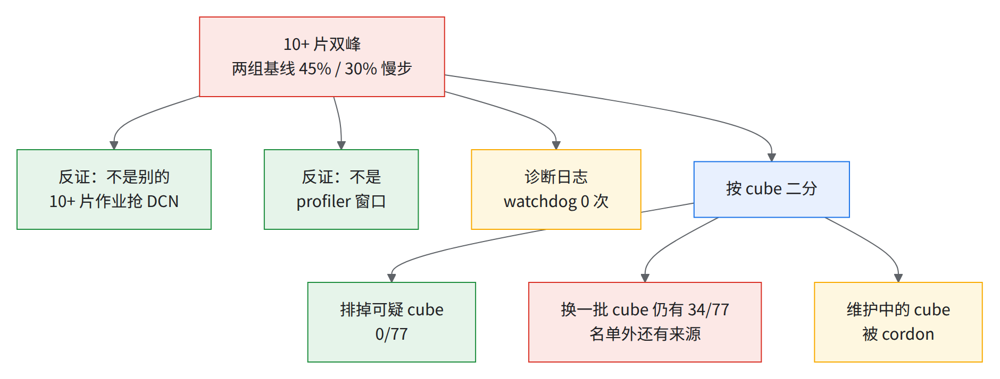
- 反证一：JIT 基线稳态期间池里无别的 ≥1,024 芯作业，10+ 片合成基准的 nightly 只和编译期重叠；两个作业并跑，前 59 个稳态步里只出现 1 个慢步。
- 反证二：复跑的慢步散在 step 3–10、29–31、42–49、58–68，多在 profiler 窗口（40–59）外。
- 线索 [推断]：慢步多出约 25–60 个指数点，与「再关 host 归约」恒多的约 61 点同量级，DCN 规约可能偶尔走慢路径。
- 加诊断 flag 的两组的 megascale 日志（上千台 host）：
- watchdog 0 次、慢步窗口 libtpu 日志 0 行（通道没坏）→ 排除 host 线程卡住 > 2 s；没排除 DCN 慢路径（watchdog 不看等网络 [推断]）。
megascale_grpc_transport_stall_threshold=2s会跳过 stalled 连接，可能正是慢步率降的原因 [推断，需对照]。- 对时后两组的慢步只重叠 22 s，「同一外部因素同时拖慢两者」强版本不成立。
第三步：按 cube 二分，指向具体节点（cube＝一个 4x4x4，16 台 host；一个 pod 有 144 个。慢步阈值指数 85，step 3–79）：
| 名单 | 慢步 |
|---|---|
| 排除另一作业用过的 7 个 cube | 编译时一个 cube 报 SLICE_FAILURE_CHIP_DRIVER_ERROR，0 步 |
| 同名单重跑 80 步，中位指数 71 | 0/77，这组没有双峰 |
| 再排除那个报错的 cube | 34/77 |
| 换一批不相交的 cube，不含维护中的那个 | 2 |
| 上一批调换两个 cube、换入维护中的那个和另一个 | 14，全在同一扰动窗口 |
「坏 cube」怎么认定（全章「坏 cube」，即坏子块，都按这条）：有单独故障证据的 4 个——计划外维护中、周期性数秒整片卡顿、随后被 cordon（K8s 术语：把节点标成不可调度）的那个；编译时报 SLICE_FAILURE_CHIP_DRIVER_ERROR 的那个；§8 同一 pickle 三次各有 16 个节点落上去、步时双峰的那个；§8 独立复现中途有节点关机的那个。另 2 个只是二分时被调换过，没有单独的故障证据。
- 定位：DCN 等待空档最后到的 host 绝大多数来自维护中 cube 所在的 slice。
- 巡检看不出：健康字段三处全正常，却带维护污点。排除维护中的、报错的和一个被调换过的 cube 后，干净基线指数 71。
- [推断] 至少部分双峰来自维护中节点周期性卡住整个 slice。逐 host 采样只写 stdout，必须实时抓；加诊断 flag 的两组没抓到，这部分数据缺失。
方法小结：同配置多跑 → 按时间对齐排除并跑作业 / profiler → 看 watchdog 和 libtpu 日志排除 host 卡线程 → 按 cube 二分 → 用「最后到达的 host」统计定位 slice。按 slice 看延迟时记住：慢片自己最低（§13）。
15.10+ 片比 1 片多出的那截去哪了
15.1 JIT 下：跨片通信没藏住
1 片 vs 4 片 profile（大号模型 FP8、JIT、HLO 通信重排关）[推断：all-reduce 等待和 host recv-done 只在跨片后出现或变大，没逐个 op 追]：
| 1 → 4 片 | |
|---|---|
| 步时 | +25%（单片 JIT 指数 51） |
| TensorCore 计算 | 该项自身 +6%，占增量约七分之一 |
| 没藏住的通信（主要是 all-reduce；reduce-scatter 不到 1%） | 该项自身 +20%，占增量约三分之一 |
host recv-done 等待 |
1 片没有；4 片约占步时 10%，占增量约一半 |
- JIT 下唯一一份跨片归因；AOT + HLO 通信重排藏住后只剩约 4%（§15.2）。
💡一步 DCN 要搬多少 [推断]
- 梯度的跨片 ring AR 即使按线速算，传输也占步时可观的一截；有效带宽越低（见 §2 的微基准和代理训练）越大，降低梯度通信精度能缩短。外推只算「容量规划估计」。
- 传输时长 ≠ 露出时长：同口径单片 JIT 指数 51、10+ 片 JIT 基线 71，DCN 最多露出 20 个指数点（约三成步时），大半已和计算重叠。
15.2 AOT + HLO 通信重排下：多付约一成步时，六成被片内少等抵掉
1 片关 pipeliner（指数 45）比 §8 的 10+ 片（47）快约 4%（profile 口径也是约 4%）。两边配置差见 §8 的复现表；下面是这些差异的合计，要分开须用单片基线版代码编一份 10+ 片关 pipeliner 的对照，还没做。
| 每步，占 1 片 profile 步时 | 10+ 片 − 1 片 | 跑间波动（另两次 10+ 片） |
|---|---|---|
| profile 窗口中位步 | +4% | 两次相差 2–3% |
| TC 纯计算（并集） | +4%（计算本身 +7%） | 三次逐毫秒级相同 |
| 暴露通信 | −3%（暴露通信本身约 −10%） | |
| SC 集合通信忙（并集） | 1–2% | |
| 其中 SC all-reduce | +2%（本身 ×2.1） | 另一次再多约 1.5× |
| 其中 SC reduce-scatter / all-gather | 不到 1% / 不到 1% | 不变 |
TC self time 按 hlo_category 拆（TC 空闲几乎不变）：
| 归到哪一组 | 类别 | 小计（占 1 片步时） |
|---|---|---|
| 多算的 | loop fusion 占绝大部分（+4%）；DUS、reduce、data formatting、conv fusion、concat、pad 各不到 1%；custom-call、custom fusion 略减 | 约 +4% |
| 跨 DCN 的 | host recv-done +3%（1 片是 0）、wait:all-reduce 1–2%、all-reduce、host send-done 各不到 1% |
约 +5% |
| 片内少等的 | wait:reduce-scatter 约 −4%、wait:all-gather 约 −2% |
约 −6% |
| 其他 | wait:other 等 |
不到 1% |
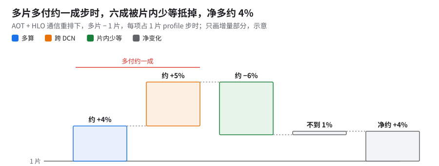
看哪里：绿色那根往回走的柱子（占 1 片步时，示意）。
读法[推断：六成 ＝ 片内少等 ÷（多算 + 跨 DCN），按原始毫秒算]
- 跨 DCN 直接暴露约 5%：其中最大的一块是 1.5 KiB 小包那组
recv-done，全落在 DCN 传输期间，其余几组重叠 98–100%（对 Megascale 平面的device_*事件）。 - TC 多算约 4%，几乎都在反向层 scan 的 loop fusion。
- 按名字：
fusion约占增量六成、clamp_convert_fusion与abs_reduce_fusion各约两成（像 FP8 量化 [推断]）。 - 带 DCN-only 流水标签的算子（私有 pass 生成，loop + convolution）合计比总增量还大约 1.3 倍——大部分是原有计算被挪位、改名 [推断]，新增部分来源未确认。
- 按名字：
- 片内等待反而少约 6%，三份 10+ 片 profile 一致（RS、AG 等待三份互差不到 1–2%）。[推断] 计算变多给 ICI 更多地方藏；或是 10+ 片用的 profile 和那两处调度改动本身改变了排法。
- 逐层看到的机制（下图）：1 片只有个别层先发 AG，多片每层等 RS 少约 1/4、loop fusion 多约 45%；第 2、3 条是同一件事的两面 [推断：对一层的 trace 读的，未逐层核]。
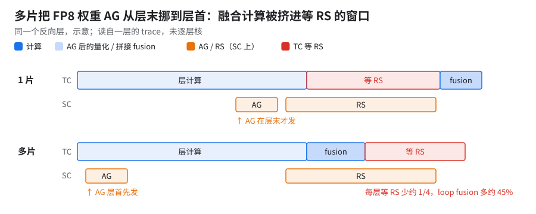
看哪里：下一行浅蓝 fusion 挤进了原来等 RS 的位置——等得少了、算得多了（示意）。 4. 多片配方的单项贡献没拆：私有的 DCN all-reduce 合并 pass、「DCN 重叠优先」那处改动和片数绑在一起。
✅怎么在 profile 里读 DCN
- XProf 里 DCN 是一个单独的进程：
/device:CUSTOM:Megascale Trace，紧贴在 SparseCore 那几行下面。1 片 run 没有这个平面（0 事件，进程都不出现）——找不到不是工具坏了，是没跨片。- 事件名是
NetworkSend/NetworkReceive，没有 SendRpc、Reduction 这类名字；host 上的加法看不到。- 对法：拿 TC 上卡住的
host recv-done/wait:all-reduce，按会合名（all-reduce.<id>_0）和 channel 去平面里找同名事件。例：那个 1.5 KiB 小包在中间某一步的单个 recv-done，对应的NetworkReceive长度只差约 3%，收尾差 0.1–0.3 ms——真在等网络。- 反例：另一份 profile 里等一个跨片 all-reduce（约占步时 4%）期间，本机平面 0 事件——本机早发完了，在等最慢那片 [推断]。TC 在等 ≠ 本机网卡在忙，要两边对着看。
15.3 同一份 pickle 跑三次，差在哪
💡要点换一批 cube，差全在跨片通信，片内计算和 ICI 逐 ms 不变（两次运行的 cube 约六成相同）。
三份 loop fusion 互差 0.2 ms；按「算子 + shape」diff：
| 对比 | 慢多少（单个 profile 步） | 差在哪 |
|---|---|---|
| 未跑完的那组独立复现 比 完整的独立复现 | 1–2% | 几乎全是一个跨片 wait:all-reduce 变成 ×1.9，与 SC 上 AR 忙的增量逐 ms 对上（注 1） |
| 完整的独立复现 比 10+ 片 AOT 中间档 | 1–2% | host recv-done 合计 ×2.0 [推断：随分到的 cube / DCN 路径变]，主要是那个 1.5 KiB 小包的 recv-done（×3.7） |
- 注 1：recv-done 各组互有增减、基本互抵；那个变慢的 AR 等待只有约 15% 与本机 DCN 事件重叠（快的那次四成出头），大部分在等 [推断：等最慢那片；需按片拉
collective_end_to_end_latencies]。 - 生产配置上也看到同一类现象：一份 profile 等 AR 是另一份的约 2 倍，大头是单个 all-reduce，跨片 AR 每次跑都不一样 [推断]。
16.弱扩展：只拿同口径比
16.1 各口径
| 比较 | 单片指数 | 多片指数 | 效率 [推断] | 口径 |
|---|---|---|---|---|
| JIT：同镜像、同配置的单片 vs 10+ 片 JIT 基线 | 51 | 71 | 71% | 同口径（10+ 片三次独立运行快步中位都是 71，§14） |
| AOT + HLO 通信重排（关 pipeliner）：1 片旧代码 vs 10+ 片 AOT 中间档 | 45 | 47（10+ 片） | 96–97% | 不同口径：两边代码和 cost profile 不同（§8、§15.2），分母已过期 |
| 生产 nightly 单 SC 对 10+ 片 MTC 作业 | 36 | 41 | 87% | 都是真实数据，pickle 不同 |
| 单片双 SC 配置对 10+ 片最好段 | 34 | 41 | 83% | 配置不同，只当参考 |
| 4 → 10+ 片 | 39 | 41 | 94% | 同为 MTC 系列 |
| 10+ → 20+ 片 | 41 | 41 | ≈100% | 20+ 片借用 10+ 片 profile |
- 同代配置下 1 → 10+ 片 83–87%；10+ 片往上基本不再掉 [推断]。10+ → 20+ 片几乎不掉，难的是 1 → 10+ 那一步，差 5–7 个指数点。
- 旧分母不能再用：旧代码的 1 片关 pipeliner（45）对生产 10+ 片（41）算出来约 110%，超 100% 无意义 [推断]；以单片 37 为分母的下界约 90%，也已被更快的单片取代。
- 1 片 AOT + HLO 通信重排（37）不能当 10+ 片 JIT 基线的分母：10+ 片 JIT 基线没开 HLO 通信重排。
- 对照：小号模型 1 → 2 片约 80%（§3）、约 90% / 约 85%（单 / 双网卡，§12）；大号模型代理 DP1 → 2 约 75%（§2）；AOT + HLO 通信重排、pipeliner 关，1 → 2 / 8 片 96% / 90%（02 §16.2，[推断]）。
- 干净对照（当前代码同编 1 片和 10+ 片、各用自己的 profile）还没做。
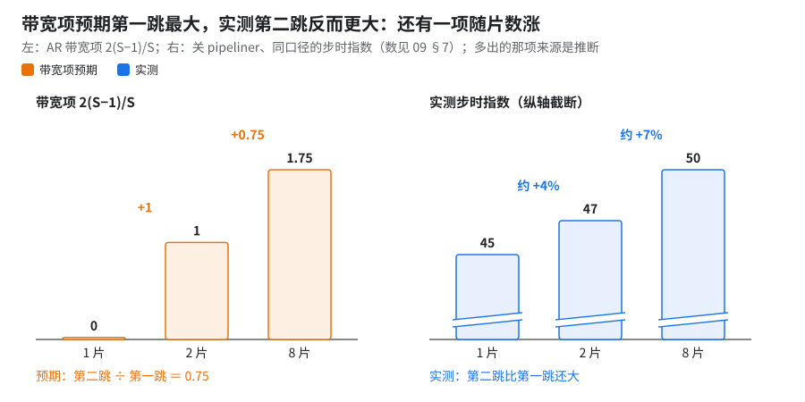
看哪里：右边第二跳比第一跳还高，左边预期它只有 0.75 倍 [推断：相减相除；实测数见 09 §7]。
为什么曲线不是「先陡后平」：同口径看，2 → 8 片的增量比 1 → 2 片还大，说明除了带宽项 2(S−1)/S 还有一项随片数涨的开销（上图）；固定开销和 host recv-done 也是 2 片才出现。开 / 关 pipeliner 的原始数见 09「单片完全对上以后才上多片」，与本段同口径：
- 开 pipeliner 时看起来平（指数 37 → 52 → 55）：2 → 8 片增量 ÷ 1 → 2 片增量 ≈ 0.2。那是因为第一跳同时关掉了单片的跨圈 pipeliner（多片用不了），分母被放大，不能当曲线形状
- 随片数涨的那一项 [推断]：和 §2 小包地板随片数 / host 数上涨对得上；也可能是最慢 host 拖后。判据：按片数分开抓 profile，把 DCN RS 单独拆出来
- 若 1 片关 pipeliner 的口径另有出入（见下行出处），整段再降一级
把握：推断 · 出处：本书 09 §7、02 §16.2、本节表。
同口径指：1 片与 2 / 8 片都关 pipeliner，代码镜像、cost profile、FP8 参数与运行时 flag 相同，都取第 10–49 步 p50。差别只有两处：1 片开了 profiler（只影响均值，p50 取 15–49 步不变）；多片编译另加 DCN 合包 pass 与两条 DCN 编译 flag（多片配方本身），见 09 §7。
16.2 「DCN 利用率 99%」从哪来
查到的「99%」有三个出处，没有一个是「DCN 带宽跑到线速 99%」：
| 出处 | 数 | 它其实量的是什么 |
|---|---|---|
| 独立复测（同一套微基准） | ppermute_uni 360 Gbps，「基线的 99.x%」；all_reduce 168 Gbps，对基线约 100% | 复现吻合度：独立复测跑出了和自测一样的数。分母是自测基线，不是线速 |
| 32 / 64 芯对照（上一代模型） | DCN DP 扩展效率「99.x%」 | 弱扩展效率，而且只有 2 片 × 2x2x4（§1） |
| §16.1 | 10+ → 20+ 片 ≈ 100% | 弱扩展效率（本节推算） |
同一次独立复测的线速口径：ppermute_uni 367 Gbps ＝ 约 90%；all_reduce 约 170–176 Gbps（每方向）＝ 双网卡 400 Gbps 的四成出头（「800 Gbps 全双工」口径是 TX + RX 合算的同一个数）。换单网卡分母见 §12。
变好的是「藏」，不是「跑满」（§9）；生产配置的暴露通信仍占步时一成多，离「99% 藏住」也还远 [推断]。
⚠️注意给别人讲时，不要说「DCN 利用率 99%」。能站住的说法是：「DCN all-reduce 只用到双网卡线速四成左右（卡在 host 归约，不是网卡），但大部分通信已经藏到计算底下；10+ 片对 20+ 片几乎零损失」。
17.现状：各配置步时指数
💡要点单片最快 34，10+ 片稳态最好 41，20+ 片 41。
| 配置 | 片数 | 步时指数 | 说明 |
|---|---|---|---|
| 单片，RS 双 SC + 新 profile + 双 SC 通信搜索 | 1 | 34 | 不是生产默认（§10） |
| 单片生产 nightly（单 SC） | 1 | 36 | 生产默认（CI 每日跑的步时，取后段步） |
| 生产作业，后段 | 10+ | 41 | 稳态最好 |
| 另一个生产作业，后段 | 10+ | 41 | |
| MTC 作业（换 profile 后的 pickle） | 10+ | 41 | |
| MTC 作业（20+ 片 pickle，借用 10+ 片 profile） | 20+ | 41 | |
| MTC 作业 | 4 | 39 | |
| 较小多片配置（隔离慢节点后） | — | ≈45 |
- §9 那份 profile 的中位步（41）是 profile 窗口，不是稳态中位。
- 一份 MTC 作业的 xplane 里连续 5 步是指数 42 / 43 / 52 / 56 / 41，慢的是检查点步在等 DCN（premapped buffer 默认 4 GiB，§13）。
- 上表就是文本版大号模型目前最新的多片步时。多模态版另有一个多片数（多模态底指数 56，见 12），不可与本章指数直接比。
18.每项怎么确认生效
本章的开关大多开没开都不报错；换集群后逐项过一遍。
| 项 | 看哪里 | 生效的样子 | 依据 |
|---|---|---|---|
网卡（--megascale_grpc_interface_prefixes） |
训练启动日志、JobSet | grep 到这个 flag，值是你要的卡（生产 eth2,lo）。只认 LIBTPU_INIT_ARGS 里的写法，MEGASCALE_GRPC_* 环境变量大概率无效 |
§12、§13；没注入网卡 flag 时测的数作废 |
| host 归约（默认开） | 优化后 HLO | 跨 DCN 的 psum 降成 send / recv，带 is_host_transfer=true、_xla_megascale_transfer_type=ALL_REDUCE，设备侧没有 add |
§12.1，10+ 片合成基准 |
| DCN AR 合并（libtpu combiner 或私有的 DCN all-reduce 合并 pass） | 优化后 HLO | 跨 DCN 的梯度 AR 包数变少；合成基准里 28 包变 2 包（按 dtype 各一包） | §5；真实模型的包数要自己数 |
prefer_async_allgather_to_allreduce |
优化后 HLO | decomposer 改写出的那批跨 DCN AR(add) 换成 all-gather | §3 [推断：由机理推出，未实测验证] |
| RS 双 SC | profile | RS 出现在两条 SparseCore lane 上；编译端和运行端写法不一致时以编译端为准 | §9、§10 |
| DCN 实际流量 | XProf 的 /device:CUSTOM:Megascale Trace 平面 |
有 NetworkSend / NetworkReceive 事件；1 片 run 没有这个平面，找不到不代表工具坏了 |
§15.2 |
| XLA 两个 pass 关没关 | 训练进程的 XLA_FLAGS |
--xla_disable_hlo_passes 里有 all_gather_decomposer / collective-pipeliner-forward；AOT 下要看编译端的环境 |
§7、11 B01 |
| cost profile 是否对得上 | AOT 编译日志里 placement pass 报的 cost profile 命中情况；没有这套 pass 时看上卡后的第一份 profile | SC 集合通信的未命中数不激增；profile 里 TC 等 RS、host recv-done 没比换 profile 前变大。激增或变大说明 profile 是别的片数 / SC 配置采的 |
§9 |
19.还没解决的
- 双峰慢步的根因：至少部分来自维护中节点（§14），但二分时换一批 cube 后仍有一组 34/77 慢步，名单外还有来源。逐 host 采样要实时抓。
- DCN AR 只有三四成线速：根因（排队、rendezvous、约 5 MiB gRPC 分块）未确认（§12.2）。
- 生产长跑的步时漂移：前段分段中位都在指数 41，长跑后段漂到 44（约 +7%），重启即回 41。原因未核。
- 检查点慢段：每次
Saving checkpoint at step N之后都有一小段步明显变慢，与每次存盘一一对上 [已证实：步时与日志时间戳]；重启后的慢段可能更短，原因未核。开销以存档主场为准，见 07。 - 多模态版 10+ 片 DCN DP 的显存过不了每日 AOT 显存检查（92 GiB，§7）。
- AR → AG 阈值那条（§5）没有进默认配置；DCN 可观测性无解（按 slice 拉
collective_end_to_end_latencies是目前唯一办法）。 - 双网卡 vs 单网卡在生产配置上没有同 pickle A/B（§12）。
- §11 调度合并没有 10+ 片可比实测。
考考自己
28 个梯度 all-reduce，每个都很小。为什么「并发 + 合并」比「只并发」快 2.7 倍，而「串行 + 合并」一点不快？ 答：每次 DCN 传输都有固定开销（同一程序里串行摊下来约 9.6 ms/个，单独发起一次约 21 ms）；合并把 28 个包变 2 个（按 dtype 各一个），省掉这些固定开销，外加这个基准里 bf16 padding 的一半字节。串行时每个 AR 依赖上一个结果，编译器没法捆（HLO 里仍是 28 个包）。